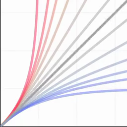
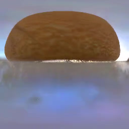

|
Salar Shakib I am Salar Shakibhamedan, a Ph.D. candidate at TU Wien (Vienna University of Technology), specializing in Edge AI and efficient deep learning. My research focuses on optimizing AI models for performance and scalability in resource-constrained environments. Currently, I am a visiting researcher in SciTech Lab at University of California, Irvine (UCI), where my work studies techniques to enhance LLM usability in healthcare domain. |

|
ResearchI'm interested in computer vision, deep learning, generative AI, and image processing. Most of my research is about inferring the physical world (shape, motion, color, light, etc) from images, usually with radiance fields. Some papers are highlighted. |

|
Bolt3D: Generating 3D Scenes in Seconds
Stanislaw Szymanowicz, Jason Y. Zhang, Pratul Srinivasan, Ruiqi Gao, Arthur Brussee, Aleksander Holynski, Ricardo Martin-Brualla, Jonathan T. Barron, Philipp Henzler arXiv, 2025 project page / arXiv By training a latent diffusion model to directly output 3D Gaussians we enable fast (~6 seconds on a single GPU) feed-forward 3D scene generation. |

|
CAT4D: Create Anything in 4D with Multi-View Video Diffusion Models
Rundi Wu, Ruiqi Gao, Ben Poole, Alex Trevithick, Changxi Zheng, Jonathan T. Barron, Aleksander Holynski CVPR, 2025 (Oral Presentation) project page / arXiv An approach for turning a video into a 4D radiance field that can be rendered in real-time. When combined with a text-to-video model, this enables text-to-4D. |

|
Generative Multiview Relighting for
3D Reconstruction under Extreme Illumination Variation
Hadi Alzayer, Philipp Henzler, Jonathan T. Barron, Jia-Bin Huang, Pratul P. Srinivasan, Dor Verbin CVPR, 2025 (Highlight) project page / arXiv Images taken under extreme illumination variation can be made consistent with diffusion, and this enables high-quality 3D reconstruction. |

|
SimVS: Simulating World Inconsistencies for Robust View Synthesis
Alex Trevithick, Roni Paiss, Philipp Henzler, Dor Verbin, Rundi Wu, Hadi Alzayer, Ruiqi Gao, Ben Poole, Jonathan T. Barron, Aleksander Holynski, Ravi Ramamoorthi, Pratul P. Srinivasan CVPR, 2025 project page / arXiv Simulating the world with video models lets you make inconsistent captures consistent. |
|

|
A Power Transform
Jonathan T. Barron arXiv, 2025 tweet / arXiv A slight tweak to the Box-Cox power transform generalizes a variety of curves, losses, kernel functions, probability distributions, bump functions, and neural network activation functions. |


|
EVER: Exact Volumetric Ellipsoid Rendering for Real-time View Synthesis
Alexander Mai, Peter Hedman, George Kopanas, Dor Verbin, David Futschik, Qiangeng Xu, Falko Kuester, Jonathan T. Barron, Yinda Zhang arXiv, 2024 project page / arXiv Raytracing constant-density ellipsoids yields more accurate and flexible radiance fields than splatting Gaussians, and still runs in real-time. |

|
CAT3D: Create Anything in 3D with Multi-View Diffusion Models
Ruiqi Gao*, Aleksander Holynski*, Philipp Henzler, Arthur Brussee, Ricardo Martin Brualla, Pratul P. Srinivasan, Jonathan T. Barron, Ben Poole* NeurIPS, 2024 (Oral Presentation) project page / arXiv A single model built around diffusion and NeRF that does text-to-3D, image-to-3D, and few-view reconstruction, trains in 1 minute, and renders at 60FPS in a browser. |

|
NeRF-Casting: Improved View-Dependent Appearance with Consistent Reflections
Dor Verbin, Pratul Srinivasan, Peter Hedman, Benjamin Attal, Ben Mildenhall, Richard Szeliski, Jonathan T. Barron SIGGRAPH Asia, 2024 project page / arXiv Carefully casting reflection rays lets us synthesize photorealistic specularities in real-world scenes. |
|

|
Flash Cache: Reducing Bias in Radiance Cache Based Inverse Rendering
Benjamin Attal, Dor Verbin, Ben Mildenhall, Peter Hedman, Jonathan T. Barron, Matthew O'Toole, Pratul P. Srinivasan ECCV, 2024 (Oral Presentation) project page / arXiv A more physically-accurate inverse rendering system based on radiance caching for recovering geometry, materials, and lighting from RGB images of an object or scene. |

|
Nuvo: Neural UV Mapping for Unruly 3D Representations
Pratul Srinivasan, Stephan J. Garbin, Dor Verbin, Jonathan T. Barron, Ben Mildenhall ECCV, 2024 project page / video / arXiv Neural fields let you recover editable UV mappings for the challenging geometries produced by NeRF-like models. |

|
Binary Opacity Grids: Capturing Fine Geometric Detail for Mesh-Based View Synthesis
Christian Reiser, Stephan J. Garbin, Pratul Srinivasan, Dor Verbin, Richard Szeliski, Ben Mildenhall, Jonathan T. Barron, Peter Hedman*, Andreas Geiger* SIGGRAPH, 2024 project page / video / arXiv Applying anti-aliasing to a discrete opacity grid lets you render a hard representation into a soft image, and this enables highly-detailed mesh recovery. |

|
SMERF: Streamable Memory Efficient Radiance Fields for Real-Time Large-Scene Exploration
Daniel Duckworth*, Peter Hedman*, Christian Reiser, Peter Zhizhin, Jean-François Thibert, Mario Lučić, Richard Szeliski, Jonathan T. Barron SIGGRAPH, 2024 (Honorable Mention) project page / video / arXiv Distilling a Zip-NeRF into a tiled set of MERFs lets you fly through radiance fields on laptops and smartphones at 60 FPS. |

|
ACE-CNN: Approximate Carry Disregard Multipliers for Energy-Efficient CNN-Based Image Classification
Salar Shakibhamedan, Nima Amirafshar, Ahmad Sedigh Baroughi, Hadi Shahriar Shahhoseini, Nima TaheriNejad IEEE Transaction (TCAS-I), 2024 Paper CNNs are powerful but resource-intensive, making them challenging to deploy on edge and power-constrained devices. This paper introduces a novel family of approximate multipliers that reduce energy and delay while maintaining strong machine learning performance. It presents the first comprehensive study to demonstrate improvements in both computational efficiency and model accuracy, enabling practical, high-performance CNNs for resource-limited environments. |
Miscellanea |
|
Feel free to steal this website's source code. Do not scrape the HTML from this page itself, as it includes analytics tags that you do not want on your own website — use the github code instead. Also, consider using Leonid Keselman's Jekyll fork of this page. |